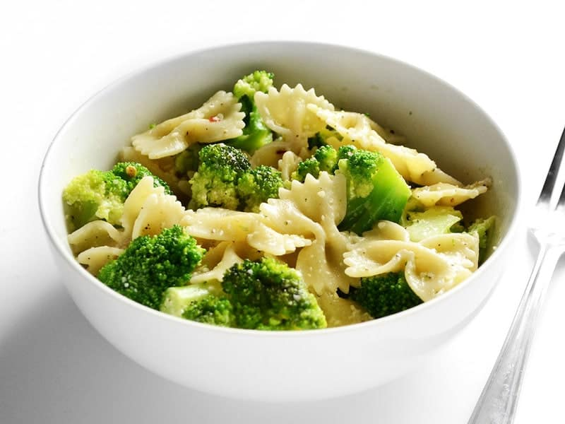

Bowties and Broccoli
Here we have yet again another insanely cheap yet delicious meal
ideal for people on a budget! Enjoy!
Ingredients:
- 12 oz. pasta ($1.00)
- 1 lb. frozen broccoli florets (1.69)
- 3 Tbsp butter ($0.30)
- 3 Tbsp grated Parmesan ($0.31)
- Salt to taste ($0.05)
- Freshly cracked pepper to taste ($0.10)
- 1 pinch crushed red pepper (optional)($0.05)
Instructions:
- Bring a pot of water to a boil, then add the pasta.
Boil until the pasta is al dente (7-10 minutes).
Add the frozen broccoli florets to the boiling pasta
water, turn off the heat, and let sit for 1-2 minutes,
or until the broccoli is tender-crisp. Drain the pasta
and broccoli in a colander.
- Transfer the pasta and broccoli back to the pot (with the
heat off) or to a bowl and add the butter. Toss until
the butter has melted and coated everything. Add the
Parmesan, salt, freshly cracked pepper, and red pepper
flakes, then toss to coat again. Taste and adjust
seasoning as needed. Serve immediately.
Nutritional Value:
Serving: 1 Serving ・ Calories: 294.78 kcal ・
Carbohydrates: 47.47 g ・ Protein: 10.88 g ・
Fat: 7.35 g ・ Sodium: 250.55 mg ・ Fiber: 4.5 g
References:
This recipe was gathered from Budget Bytes.com